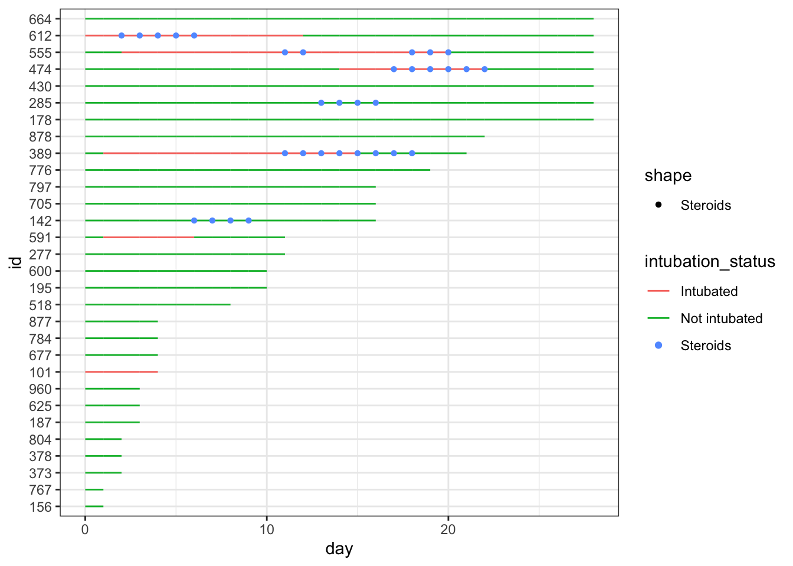
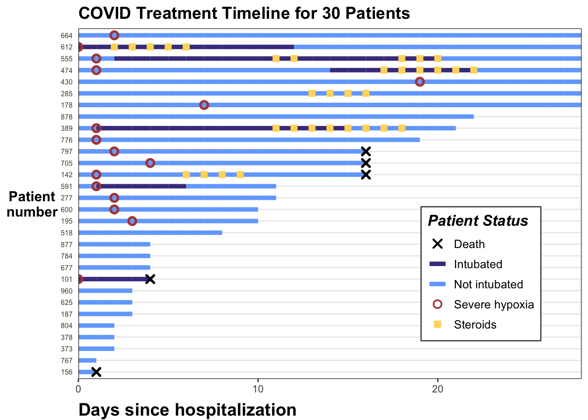

Health care data, especially in administrative databases, are often longitudinal. This means that each patient has their own journey through time with multiple medical encounters, each corresponding to a different time point. We often want to collect data from these encounters and summarize them in a way that is useful for analysis. We often want to track each patient over time, to see the natural history, or a response to a change in therapy.
7.2 The Swimmer Plot
The Swimmer Plot is a visualization that shows treatment timelines, with each patient in their own “lane”. It gets the name because it looks a bit like a pool at a swim meet, where you can see the progress of each patient over time. These can help visualize treatment or measurement patterns, clinical events, time-varying covariates, outcomes, and loss to follow-up in longitudinal data settings. These work well with a moderate number of patient courses (usually 10-50), and can be illuminating when new approaches to therapy are being tried in small numbers of patients, like a case series.
Note that this is not done with a particular package, but with standard geom_line and geom_point, but with a lot of customization in ggplot worth learning about.
This section borrows heavily from a nice blog post from statistician Kat Hoffman here. Note that a bit of data wrangling needs to be done to produce the correct data format for swimmer plots. We will read in some simulated data of COVID patients from spring 2020 from Kat Hoffman. The original data includes one row per day for each patient, with dichotomous outcomes for the events we are interested in: intubation status, use of steroids, the first day of severe hypoxia status, and death.
options(tidyverse.quiet =TRUE)library(tidyverse)library(gt)library(rmarkdown)dat_long <-read_csv("https://raw.githubusercontent.com/kathoffman/steroids-trial-emulation/main/data/dat_trt_timeline.csv", col_types =list(id ="c", steroids ="c", death ="c", severe ="c"))dat_long |>head()
# A tibble: 6 × 6
id day intubation_status steroids death severe
<chr> <dbl> <chr> <chr> <chr> <chr>
1 797 0 Not intubated 0 0 0
2 797 1 Not intubated 0 0 0
3 797 2 Not intubated 0 0 1
4 797 3 Not intubated 0 0 0
5 797 4 Not intubated 0 0 0
6 797 5 Not intubated 0 0 0
We can use geom_line to plot the length of stay, with day on thex axis and lines colored by intubation status and grouped by patient id.
While this is very simple, it gives you a quick look at how these 30 simulated patients did in the hospital.
We can add steroid use by day as colored points with geom_point(), by adding one line of code after geom_line(). Give this a try in the code chunk above.
7.3 Wrangling
This gets a bit messy, as we have different colors of points (steroids on/steroids off) obscuring the colors of the lines indicating intubation. It is time for a bit of data wrangling.
To help clarify things in data wrangling step 1, let’s create new variables to specify on which day(s) steroids were used, the first day that severe hypoxia was present, and when death occurred. These variables will have lots of NA values when things did not occur - so that we won’t plot points when the events did not occur (NA days), and will have days for the values when the events occurred, which makes these easier to plot on the x axis. These NAs will be removed (and generate a lot of warnings) when plotting, so we will use an option to turn off messages and warnings in this section.
In data wrangling step 2 below, it would also make it easier to read the plot if the patients were arranged by length of stay (max_day), so we will use fct_reorder() to make the patient ids (factors) ordered by length of stay.
After this data wrangling, now we can plot the data again, arranged by LOS and with only the steroid used days as visible points.
dat_swim |>ggplot() +geom_line(aes(x = day, y = id, col = intubation_status, group = id)) +geom_point(aes(x = steroids_this_day, y = id,col ="Steroids", shape ="Steroids" )) +theme_bw()

This is nicer to look at, though the legend is still a bit of a mess, and you can now clearly see that steroids were largely used for intubated patients at this point. It would look nicer if the lines were nearly as thick as the points, so that they are less obscured.
Let’s fix this with a larger geom_line size (start around 2 and fine-tune), and format the steroid points with a shape for contrast (you can find shapes 0-25 here https://www.sthda.com/english/wiki/ggplot2-point-shapes). Shapes 15-25 can have a separate color and fill, while shapes 0-14 can only have a color. Try this out in the chunk below - fix the two blanks (at the bottom right - you may need to scroll to the right) in the code below before you run the code.
Now we can add important clinical events - we can add severe hypoxia events and death events to the plot, with additional point geoms with distinct shapes for each of these.
Now three challenges for you -
Fine tune the colors in the code chunk above - at the beginning of the code chunk, create a vector of colors named colors, and include in the vector a red color for “Severe hypoxia”, a navy color for “Intubated”, a light blue for “Not Intubated”, a yellow-gold color for “Steroids”, and black for “Death”. Then in your geom_line and geom_point assign col= to each of these (“Intubated”, “Death” where appropriate)
Change the legend name to “Patient Status”, and add scale_color_manual = "Patient Status"
Assign the plot to the letter p, so that we can add to it further. Also display p at the end of the code chunk.
Try to modify the code chunk above to achieve this.
If you want to peek at a solution, see the code below
library(ggplot2)# define colors for all geometries with a color argumentcols <-c("Severe hypoxia"="#b24745", # red"Intubated"="#483d8b", # navy"Not intubated"="#74aaff", # light blue"Steroids"="#ffd966", # gold"Death"="#000000") # blackp <- dat_swim |>ggplot() +geom_line(aes(x = day, y = id, col = intubation_status, group = id),size =1.8 ) +geom_point(aes(x = steroids_this_day, y = id, col ="Steroids"), stroke =2, shape =15) +theme_bw() +geom_point(aes(x = severe_this_day, y = id, col ="Severe hypoxia"), size =2, stroke =1.5, shape =21) +geom_point(aes(x = death_this_day, y = id, col ="Death"), size =2, stroke =1.5, shape =4) +scale_color_manual(values = cols, name ="Patient Status")p
This is developing nicely. But the legend symbols are accurate for colors, but don’t reflect the shapes we used, as we did not use aes() to create the shapes. To override the default shapes, lines, etc. in the legend, we need to use the guides() function, and override guide_legend(). This lets you manually specify the shapes. Let’s start by first defining the corresponding shapes (with NA when we don’t want a point), then overriding the shapes, and update our plot.
7.4 Aesthetic Tune-Ups
shape_override <-c(4, NA, NA, 21, 15) # order matches `cols`:severe, intubation (yes/no), steroids, death, with the appropriate shapes# modify the color legend to include the correct shapesp +guides(color =guide_legend(override.aes =list(shape = shape_override ) ))
That worked well. Now let’s remove the lines though Death, Severe Hypoxia, and Steroids, by overriding the line type (1 for a standard line or NA for no line), then fine tune the stroke and size for each of these geom points. Note that for shapes 21-24 in R, you have to separately specify stroke (for outer line) and fill (if any), while shapes 1-20 just require a size.
Now the legend looks nice. Let’s add a few more aesthetic tweaks, including title and better axis labels, and repositioning the legend.
p <- p +labs(x ="Days since hospitalization", y ="Patient\nnumber", title ="COVID Treatment Timeline for 30 Patients") +scale_x_continuous(expand =c(0, 0)) +# remove extra white spacetheme( # text=element_text(family="Poppins", size=11),title =element_text(angle =0, vjust = .5, size =12, face ="bold"),axis.title.y =element_text(angle =0, vjust = .5, size =12, face ="bold"),axis.title.x =element_text(size =15, face ="bold", vjust =-0.5, hjust =0),axis.text.y =element_text(size =6, hjust =1.5),axis.ticks.y =element_blank(),legend.position =c(0.8, 0.3),legend.title =element_text(colour ="black", size =13, face =4),legend.text =element_text(colour ="black", size =10),legend.background =element_rect(size =0.5, linetype ="solid", colour ="gray30"),panel.grid.minor =element_blank(),panel.grid.major.x =element_blank() )p

And we are done. Think about how you can illustrate the clinical course for a number of patients, and transmit a lot of longitudinal information quickly when the number of patients is not too great.
Try this out with a small data set of your own. Select a few levels of status for line color, and a few events that are clinically significant. Spend some time planning this out and creating/wrangling the data set. It can be helpful to start with a rough mockup drawing on paper while you are planning to help you think out the statuses, events, shapes, and colors. It is important not to put in too much, or it can quickly get overwhelming. Try to guide the viewer to the most important events and status changes.